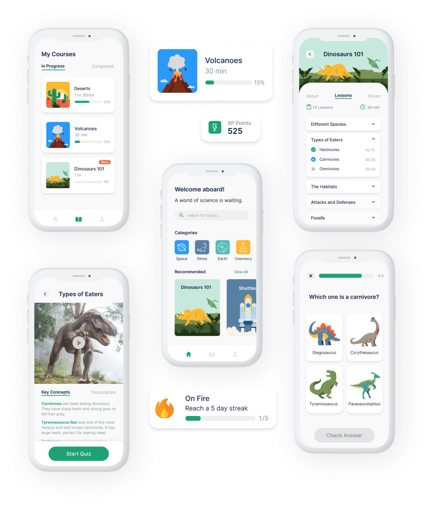

SURVEYS
I created a survey with questions about user's experiences, perceptions, and attitudes towards learning products. I also included questions geared specifically towards STEM topics. Some interesting findings include:

Catalyst is a learning product that creates a space for those with an interest in the sciences. Its strategic array of features makes science learning simple, fun, and effective.
UX/UI Designer
Research, Strategy, Design, Branding
There are limited options for learning products with a focus on the sciences. People with an interest in STEM topics are having trouble finding interesting and relevant content. When they do, they are having difficulty staying motivated to get through the content on their own.
Catalyst is an incentive based learning product that provides personalized recommendations for STEM content. It easily tracks progress towards learning goals and provides engaging knowledge checks for each lesson.
I created a survey with questions about user's experiences, perceptions, and attitudes towards learning products. I also included questions geared specifically towards STEM topics. Some interesting findings include:
I took a closer look at three learning products that are currently on the market. I wanted to analyze the behaviors of competitors and assess different approaches to learning products.

Duolingo and Lumosity have strong branding and fun UI elements that are interesting to users. Both incorporate course tracking and variable reward systems to keep users motivated. YouTube offers recommendations based on interactions with the product.
Course descriptions are vague and lack metrics that are relevant when considering content. After enrolling, users can only progress linearly and there are no options to personalize content based on individual interests.
Fun, bright visual elements to pique user interest without sacrificing functionality
Detailed but concise course and lesson overviews to meet user expectations
Keep users excited to learn with progress tracking and extrinsic motivators like achievements
I created two different types of user personas for this product, including one with disabilities. Each will benefit from different combinations of features to ensure learning success while using the product.
I created user flows to represent how a user would interact with Catalyst's most important features. Below, you will find the preliminary user flow to preview courses and access lesson content.
I made rapid iteration sketches to explore different configurations for product pages. I was able to mitigate potentional breakdowns in user flows. I also gained a clearer direction for the overall function and design of the product.
I created digital wireframes in Figma using my sketches and user flows for reference. Wireframes were compiled to represent how users can accomplish the most important product tasks. Let's take a look at the first iterations.


I breathed life into my wireframes by applying the color palette, illustrations, and other visual elements. Improvements were made to the overall functionality of the product as well. Let's look at the evolution of Catalyst in the next iterations.
I reconfigured the content feed on the homepage to include category filters. I used larger cards to emphasize recommended content. This configuration is more logical and aims to make content browsing less cumbersome.
The second iteration of the lesson overview page now mirrors the course overview for better consistency. The use of accordian tabs eliminates the need to navigate to a different page to see specific lesson content. It also frees up space for collaboration features.
I improved navigation feedback during quizzes by using inactive state buttons until users select an answer. Subsequently, the background of the selected response changes colors for click feedback. Simple but effective.
I kept the scope of the Catalyst prototype relatively narrow to stay within project time constraints. Next up, I would complete usability and preference testing to get more feedback from users.
Thanks for stopping by! Feel free to check out the clickable prototype.